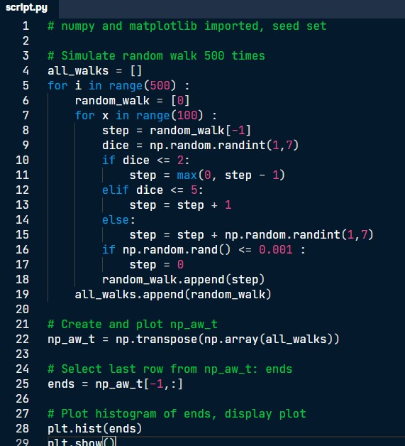
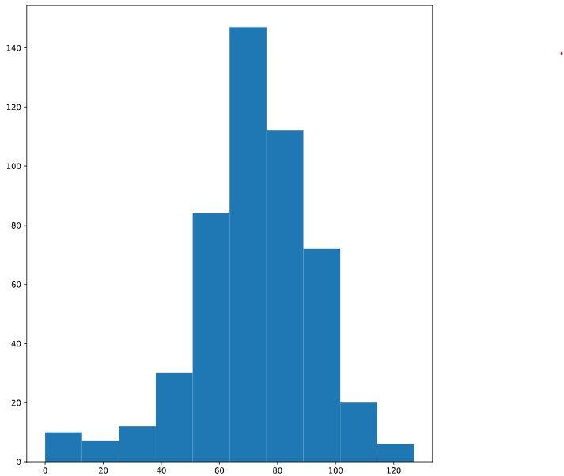
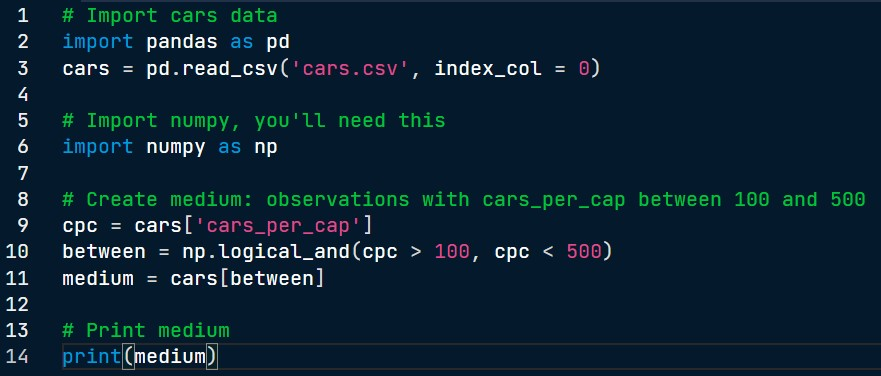
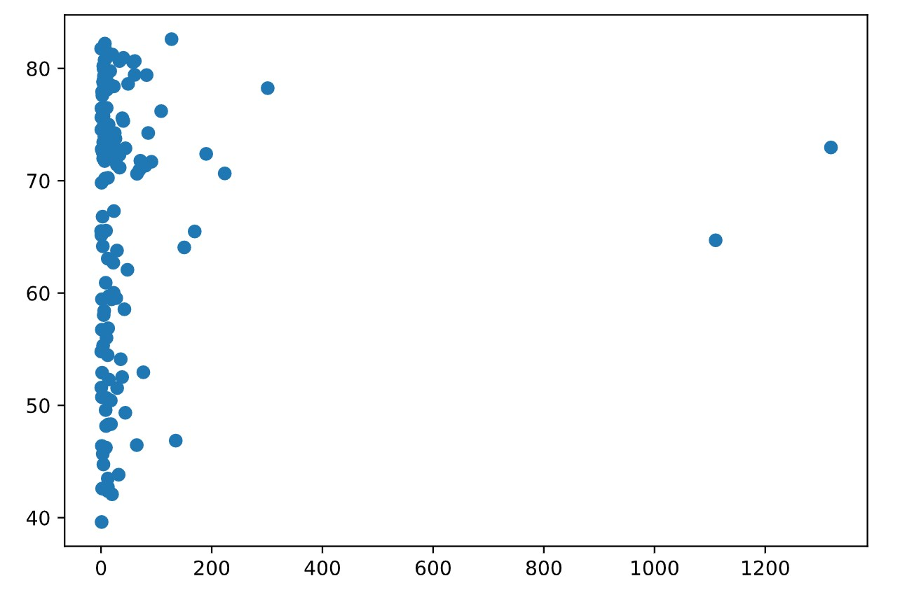

Data Scientist in Python Journey
Follow my journey!
2022-01-18
So I finally finished the course, and the project at the end wasn't as challenging as I'd imagined it to be. The problem starts with you playing a game with your friend, and you're tasked to walk up to the 60th floor. However, you have to roll a dice one hundred times to go up. If it lands on a 1 or 2, you'll go one step down. If it's 3, 4 or 5, you'll go one step up. If you throw a 6, you'll throw the die again and walk up the resulting number of steps. Also, there is a 0.1% chance that you can slip and fall to the first floor. What is the chance that you will win this bet? To solve this, we have to simulate this process thousands of times and see what fraction of the simulations you will reach 60 steps.

The 5th line of code tells Python to run the experiment 500 times. "Random_walk = [0]" means we start at the bottom of the empire state building, and the following code tells Python for each experiment, you are going to roll the dice 100 times. In the 9th line, we specify that the dice can take up a random number between 1 and 6, and the following several lines set up the conditions. The 16th line factors in the 0.01% chance you might slip and fall. Finally, we transpose the NumPy array, create a new array consisting of the last row (how high you climbed), and plot its histogram.

The NumPy array ends contains 500 integers, where each integer represents the endpoint of the experiment (random walk). We want to calculate the chance that this endpoint is greater than or equal to 60. There are two ways to do this. You can use np.mean(ends > 60) - datacamp solution. Another way is by counting the number of values greater or equal to 60 using np.count_nonzero(ends >= 60) and dividing this by 500, which returns a value of 78.4%.2022-01-14
It's been a few days since I last updated this blog, but I've learnt a few new things. In today's lesson, I learnt about pandas and how to import it using "import pandas as pd". I learnt how to create a dataframe from a dictionary which is a time-consuming process if you are working with large amounts of data. Typically, you would import a csv using, "pd.read_csv("insert.csv", index_col = 0). We were also introduced to if, elife, else commands and filtering dataframes. The code below is an example of filtering dataframes. From cars, the 9th line specifies that python should select the "cars_per_cap" column. The following code np.logical_and is a boolean operator which tells python to cpc values greater than 100 and less than 500. Lastly the variable, medium, shows us a dataframe of all observations with cars_per_cap between 100 and 500. I hope to finish this course by tomorrow! The last chapter of this course is a a project! See you soon.

2022-01-11
Today I started the Intermediate Python course on Datacamp. The stuff today was very basic, it covered creating graphs such as scatter plots, histograms and line graphs. Here is a graph that I created using plt.scatter(pop, life_exp) - super simple, it's just a scatter plot of population plotted against age which illustrates that there is no clear relationship between the two variables. On a side note, I'm also learning a bit of HTML to code this website (I had to look up the code to center the image below!).
